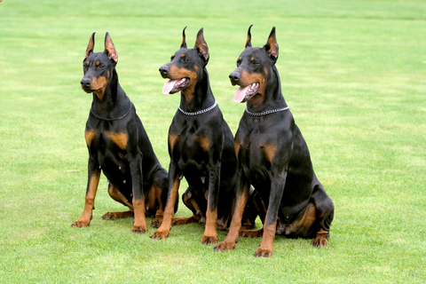

| דף ראשי | גזעים | מחלות | רקעים ותמונות | סקר | צרו קשר |
|---|
| קוקר ספאנייל |
| סמוייד |
| שפיץ יפני |
| פומרניאן |
| פודל |
| דני ענק |
| דלמטי |
| רועה גרמני |
| רועה קווקזי |
| רועה בלגי |
| בולדוג אמריקאי |
| בולדוג צרפתי |
| בולדוג אנגלי |
| צ'או צ'או |
| שיצ'ו |
| אמסטף |
| פינצ'ר |
| רוטווילר |
| דוברמן |
| האסקי סיבירי |
דוברמן
מידע כללי
דוברמן פינצ'ר או בקיצור- דוברמן, הוא גזע של כלב ביתי נפוץ ביותר והוא ידוע כידידותי, אינטליגנט ונאמן ביותר. למרות שבעבר היה מוכר ככלב שמירה וכלב משטרה, כיום הדוברמן כבר לא עוסק במקצועות אלו. מכוני רבייה מקצועיים "הרגיעו" את המזג התוקפני שבעבר היה מקושר עם הדוברמן, והגזע המודרני נחשב אידיאלי ביותר לחברה וחיי משפחה.
דוברמן - מקור הגזע והיסטוריה
פותח בגרמניה בשנת 1860, לפינצ'ר דוברמן ככל הנראה מקורות מפינצ'ר גרמני, רוטוויילר, גרייהאונד וטרייר ממנצ'סטר, וכל אלו יצרו את הגזע החלקלק והמאוד חכם. לואיס דוברמן, שהיה גובה מסים בזמנו, נאלץ מתוקף התפקיד להסתובב באזורים שורצי שודדים ונבלים. נוכח העובדה שלדוברמן היה צורך בשומר ראש, הוא פיתח גזע שיוכל להתמודד עם מצבים מסוכנים. לאחר שנקרא הכלב על שמו, הוא הפך להיט בתצוגה בשנת 1876.
דוברמן - נתונים ומאפיינים
אלגנטי, חזק וחכם מאוד, לדוברמן מבנה גוף בריא וראש מחודד ולובש כמעט את כל הצבעים. קל מאוד לאילוף, הדוברמן נחוש בדעתו, אסרטיבי וחסר פחד, אך עם זאת הוא לא מרושע כלל. הפינצ'ר דובי מאוד אוהב ונאמן למשפחתו ורוב הזמן מנסה להיות קרוב פיזית אל בני המשפחה. לדובים נוצר מוניטין של כלב אגרסיבי ומרושע וזהו כלל לא העניין, הדוברמנים מאוד מתוקים ויגנו על בעליהם בכל מחיר. גובהו של הגזע נע בין 66 ל-71 ס"מ (נקבה 61-66) ומשקלו נע בין 30 ל-40 ק"ג.
מחלות נפוצות וטיפול
בריא בדרך כלל. ישנם סיכונים לבעיות גב עקב המבנה העגלגל של עמוד השדרה, הפרעות גנטיות בזרימת הדם והשמנה בגיל בוגר. כמו כן, הדובי רגיש להיפדיספלסיה (מחלת ירכיים) ובעיות לב, כך שמומלץ לבקר אצל הווטרינר לעתים קרובות ולפני אימוץ או רכישה. יש האומרים שהדוברמן הלבן חולק גנים עם הנמר הלבן ומיד מקשרים מחלות שונות ובעיות בריאות הנפוצים בקרב כלבים לבנים (חירשות, עיוורון או נפש לא יציבה), דבר שלגמרי לא נכון. תוחלת החיים של הפינצ'ר דוברמן מגיעה עד ל-13 שנים.
